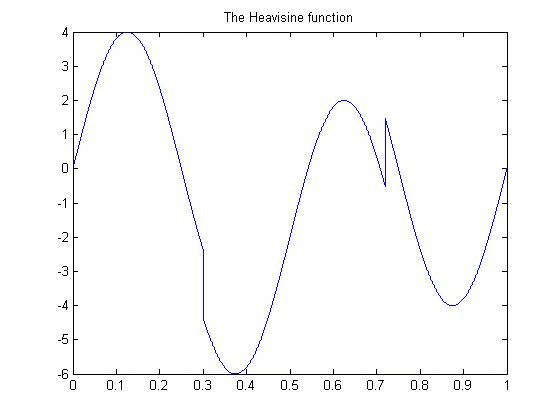

| DiscreteWavelets Toolbox |
Heavisine function
y = Heavisine(t)
y = Heavisine(t) takes a vector t and returns the values of the Heavisine function 4*sin(4*pi*t)-sign(t-.3)-sign(.72-t) for all elements in t.
The Heavisine function was introduced by David Donoho, et. al. for use in testing wavelet-based denoising methods.
Plot the Heavisine function.
t=0:.0001:1; %Create a vector of evaluation points
plot(t,Heavisine(t));
title('The Heavisine function');

© 2007-2008 Patrick Van Fleet